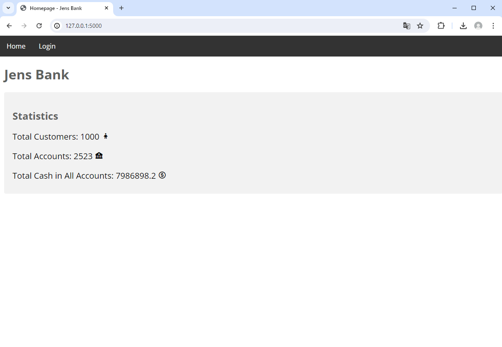
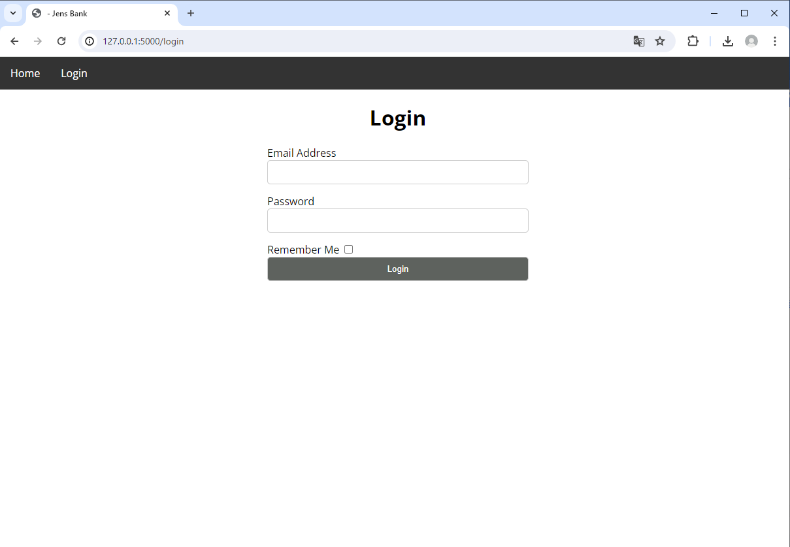
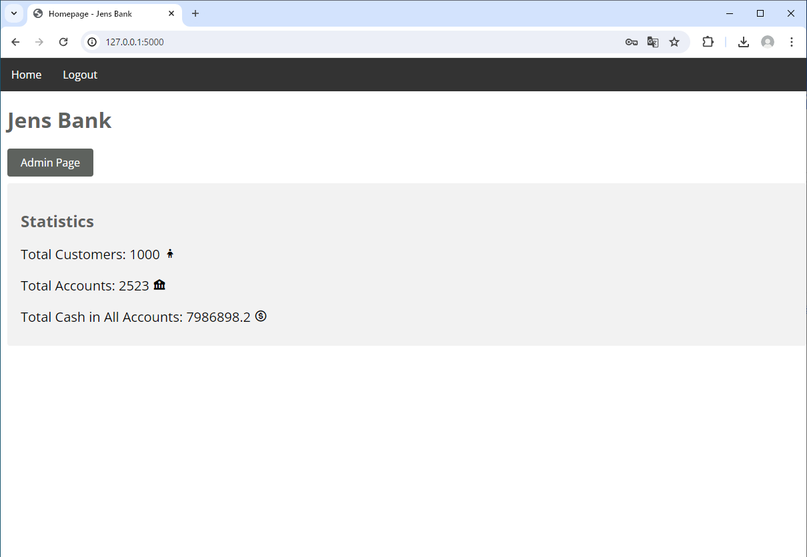
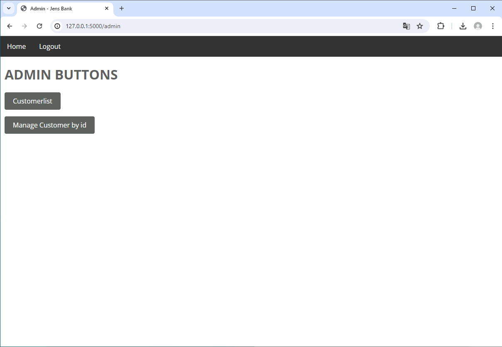
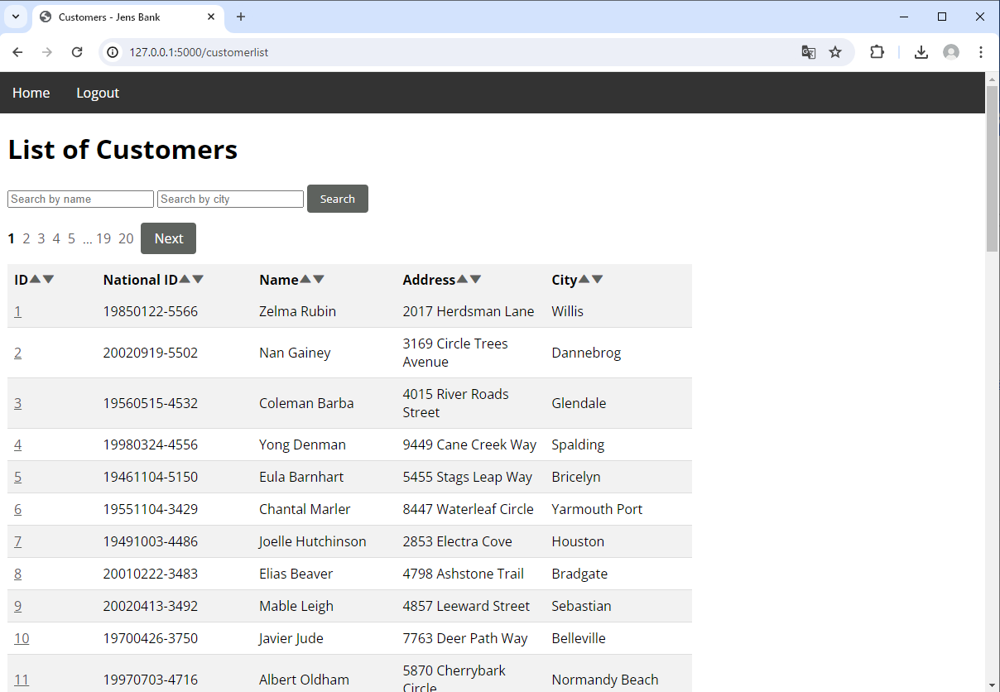
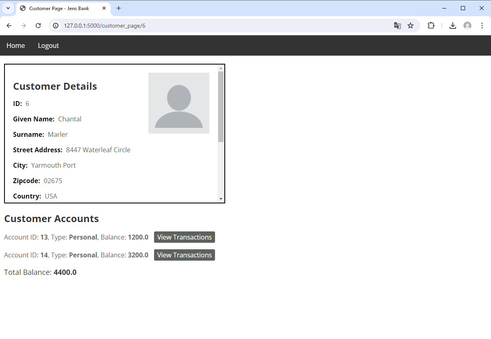
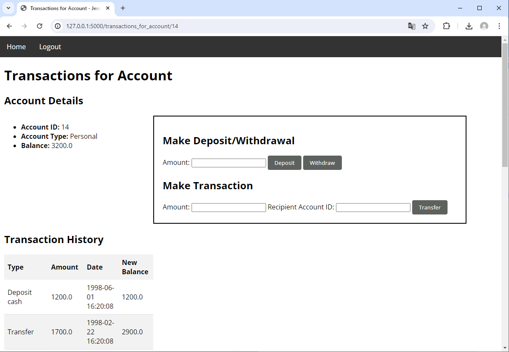

Här byggde jag en webbaserad bankapplikation från grunden. Ramverket som användes var flask, koden var därför i python. Databastekniken var sql med hjälp av docker och dbeaver. Systemet har fullt fungerande login med olika roller som har olika rättigheter samt med moderna säkerhetssystem och som admin kan man göra transaktioner mellan konton som går igenom flertalet checkar och sedan ändrar datan i databasen. Detta projekt har unittester för att säkerställa att transaktionslogiken alltid fungerar som tänkt. Som man ser på bilderna så var krutet på detta projekt ej frontend, utan att bygga ett funktionellt backendsystem! Nedan kommer bilder på projektet! zooma in i din webbläsar för att förstora bilderna!
      